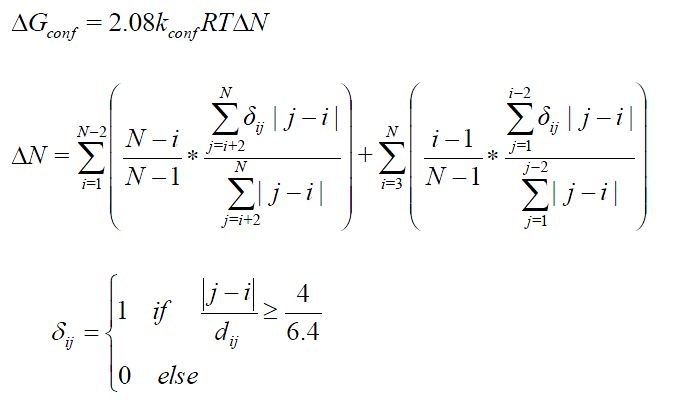

Variation of the configurational free energy from unfolded to folded protein states(DGconf)

This function is an emirical generalization of the model proposed by Kauzmann (1959). For more information see Ruiz-Blanco Y.B. et al. (2013) J. Theo. Bio. 321, 44-53